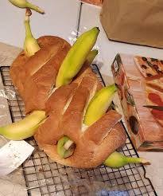

Banana Bread

Ingredients For Banana Bread.
- Flour
- Sugar
- Salt
- Baking Soda
- Vanilla Extract
- SOFTENED butter
- Eggs
- And of course, mashed bananas
- Any other ingredients you'd like to put in. Get CRAZY with it.
Cooking Instructions
- In a mixing bowl, cream together butter and sugar.
- Mix in the mashed bananas.
- Whisk together dry ingredients: flour, sugar and baking soda. Add it to the batter.
- Stir in the vanilla and other optiona ingredients, then transfer to a prepared loaf pan and bake at 350 F for 30 mins
- Pray to God it didn't burn or stick to the pan or it isn't raw.
Back To Odin's Recipes!
Stick that fruit glizzy down your gullet, sir.